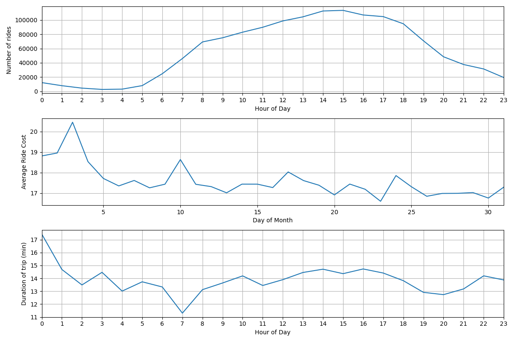

Scraping a Railway on Schedule
Jed Rembold
Mar 5, 2025
Announcements
- Midterm video deadline tonight!
- Upcoming Project Starts
- We are coming up on a point where it would be useful to strategize with your partner about possible project ideas
- I’m sending out a poll later tonight about who you might want (or not want) to work with, and then I’ll make the pairings and announce them tomorrow.
- You will be setting up (individually) a scraper in the coming week to be collecting data on a daily basis from some website or API
- You should strategize with your partner about what two difference sources you both can be collecting data for that would have interesting relationships that you could later analyze
- Most obvious join options would be date, but could be more interesting relationships depending on what you are both gathering
- No homework this coming week! Just getting started on the project!
Gathering Data
Webscraping
- Webscraping is the act of extracting information from a URL so that it can be collected or otherwise used elsewhere
- It can take multiple forms, with varying degrees of complexity (most
of which depends on the website)
- Extracting information from a table of data
- Extracting other information on a webpage that is not necessarily formatted
- Extracting information using a provided API endpoint
- The method we’ll showcase today will let you approach situations where you want to grab information from a particular table on a website, or in accessing an API
Web2DB
To focus on the acquisition of data, without worrying about the scripting details, I have created a Docker container you can use
docker pull jrembold/web2db:latestThis container will handle:
- Grabbing a static table from a webpage, or
- Retrieving a response from an API endpoint, and
- Optionally: Writing the data as JSON to a file
- Optionally: Adding the data as JSON to an indicated PostgreSQL table
- Optionally: scheduling the same operation to run with a provided frequency
Controlling the Environment
You control the behavior of the Web2DB container through environment variables
- Keeps you have needing to build your own images on top for customization
Usually a good idea to store secrets such as database passwords in environment variables anyway
Locally, the easiest way to handle the variables is to create a
vars.envfile and provide it to the docker containerdocker run --rm --env-file vars.env web2dbYou can specify them individually, one after each
-eflag, if you really wanteddocker run --rm -e SITE_URL=www.google.com web2db
Web2DB Environment Variables
web2db recognizes (or requires) 6 environment variables:
SITE_URL(required)TABLE_NUM(situational/optional)FILE_NAME(optional)DATABASE_URL(optional)TABLE_NAME(situational)DEBUG(optional)HEADER_KEYS(optional)
When providing in
vars.env, use no spaces:SITE_URL=https://willamette.edu/~jjrembold
SITE_URL for Tables
- If you are trying to scrape a static table off a site,
provide:
- The URL of the site as
SITE_URL - Indicate the number of which table you want as
TABLE_NUM- Defaults to 0 for the first table on the page
- The URL of the site as
- The table will get converted to JSON format, with each row containing the column headers as keys
- If a table is populated from a backend database on loading the webpage (a dynamic table) this method will unfortunately not work
Understanding APIs
- Instead of posting a table on a webpage, information providers might make available a public API where you can access the information
- Most REST APIs look just like a web address, but if you navigate to
that URL, instead of getting HTML to render a webpage, you get the data
directly, most often in a JSON format
- Many APIs also let you add extra information to the URL to better specify exactly what information you want back
- These generally take the form of parameter strings, and come after a
?in the URL
- Some APIs will require you to register for a key, which is often free. This is to safeguard against people slamming their servers with billions of requests. Be respectful in both your API and webscraping usage!
Understanding Endpoints
- Many API’s will offer a variety of different endpoints
- An endpoint is essentially just a specific URL that will get you a particular piece of information
- How do you know what endpoints are available?
- Classic RTFM: You read the @#%!ing manual
- Any API worth anything will have extensive documentation describing what endpoints are available and what customizations you can apply to each endpoint to get the data you want
SITE_URL for APIs
- web2db is currently configured to handle REST GET APIs
- I may be able to add
POSTfunctionality if needed
- I may be able to add
- You just need to provide the desired endpoint to
SITE_URL - If you have parameters to include at the end (following a
?), include them in your URL - web2db assumes that the response will be in JSON, which is probably the case in over 95% of APIs, but it will break if given something in another format
HEADER KEYS
Some APIs may demand that you provide certain information in what is known as a header key
- This is an additional source of information that the API server receives along with the URL
Sometimes used to indicate authentication keys or type of response requested
Provided as a string version of a key-value dictionary:
"{'key_1':13, 'key_2': 'Jed'}"
Writing to File
- If you include the
FILE_NAMEenvironment variable, the data will be written to a newline JSON file with this name in the container’s/app/outputfolder - This format is perfect for copying directly into Postgres tables
using
COPY- Instead of having a list of entries, it has 1 entry on each new line
- If you want to access these files from outside your container, you’ll need to set up a volume bind!
Writing to Database
- web2db can write the information directly to your database, provided
you fill out the
DATABASE_URLandTABLE_NAMEvariables DATABASE_URLcontains all the info to connect to your database- Form:
username:password@hostname:port/database
- Form:
TABLE_NAMEshould be a table that already exists in the database and has a column namedraw_json- It can have other columns, but web2db will only fill out the
raw_jsoncolumn - I like adding a timestamp column with a
DEFAULT now()to automatically add the time each entry is added to the database
- It can have other columns, but web2db will only fill out the
- If connecting to a local database, you may need to
include
--network=hostoption when running the docker container
Practice!
- See if you can do the following:
- Create a table in your local database with at least one column with
the
jsonbdata type - Use the Docker container to dump the table containing our class schedule here into your Postgres table
- Use the Docker container to dump the results from the API endpoint here into your Postgres table. The API gives information about all the humans currently in space.
- Create a table in your local database with at least one column with
the
- Note that although these two results have very different schema, you
can dump them both into the same
jsonbcolumn in Postgres!
Break!
Break Time!

Online Deployments
Railway Introduction
- There are many different webhosting options these days
- For this class, I was looking for:
- Something fairly straightforward
- Something free or very cheap
- Something that could easily handle both a database and data acquisition
- Railway.app is what I found
Railway Details
- As a registered new user, you get $5 free credit that does not
expire
- For what we are using, monthly costs are usually around $2-$2.50, so you probably will not need to pay anything to get through the end of the semester
- Can spin up a Postgres database easily, in the cloud
- Can also launch a Docker container
- Can build an image directly from a Dockerfile and supporting files in a GitHub repository
- Can launch an image directly from DockerHub
- You can sign up for Railway using your GitHub account
Creating a DB
- Creating a new Postgres database is drop dead simple:
- Create a new project
- Select “Provision PostgreSQL”
- Give it a moment, and then it will be up and running!
- You can click on it in your project to bring up options where you
can:
- Add tables
- Query the data directly
- Get the all important connection information
- Test it! You should be able to connect using this connection information from your client of choice!
Deploying a Docker Container: Easy Way
- Recently, Railway added the option to deploy a Docker container directly from an image hosted on DockerHub
- This makes it very easy to deploy the
jrembold/web2dbimage! - When it first is added to your project, it will not be running. It gives you some time to make any adjustments or corrections before you can then hit “Deploy” to get it going.
Deploying a Custom Docker Container
- Railway can deploy Docker containers by building a Dockerfile in a provided GitHub repository
- In your project, select “New” and then choose “GitHup Repo”
- You’ll then need to choose Configure/Install GitHub App
- This will link Railway.app to your GitHub account
- You can choose to either link it to all your repositories, or, like me, choose specific repositories
- In that repository, all you need is a Dockerfile and any supporting files that you would normally need to build the image
- Whenever you commit a new change to that repo, Railway will automatically rebuild the Docker image and redeploy it, which is pretty slick
Railway Environmental Variables
- Railway has available all the database environment variables, but
you just need to import which ones you need over to the web2db image
(the
DATABASE_URLone!) - Select the Docker container and then click on the “variables” tab
- Here you can click the
+ New Variablebutton to add the same variables and corresponding values you had in yourvar.envfile!- This way you never need to have something like a password or similar saved in text as part of your deployment
- If you make changes to these variables, Railway will automatically restart the Docker container to ensure it sees the new values!
Scheduling with Railway
- By design, the Docker container runs the program once and then exits
- Especially on remote systems, this is an efficient use of materials
- Often though, you want to scrape new data on a particular interval, so we need a way to “wake up” and run the Docker container again
- This is done in Railway by setting a CRON Schedule
- This will effectively run redeploy the container and run the program at some given interval
- Requires specifying a schedule with some special CRON syntax
CRON Scheduling
Regrouping to SQL
SHOWDOWN TIME!
- Teams to be announced on next slide
- Whoever want to be in charge of submitting your answer can change your polling name to a fun team name :)
- Only one computer can be used by the team at a time
- We’ll be using the superhero dataset from HW4
- Another computer can have the ERD open if you want
- 4 rounds: each round switch who is typing
- You’ll have 5 minutes to answer each question. After 2 minutes you
can submit a single answer.
- Submitting an answer sooner gets you more points, but you have to wait at least the two minutes.
Showdown Teams
- Nate, Landon, Joshue
- Ryan, Kaiona, Sam P
- Jace, Charlie, Sammy T
- Sarah, Rohan, Kendall
- Hriday, Jeffrey, Cameron
- Jacob, Tatum, Logan
- Andrew, Simon, Brandon
- Endy, Paxton, Dane
- Alexander, Dylan
A Question of Timing
Date-Time Reminders
- We have about 4 current date or time related data types
- Date time types:
DATE: holds a single individual dayTIME: holds a single individual timeTIMESTAMPor variants withTIMESTAMPTZ: holds a combination of date and time, along with a potential time zone
- Interval types:
INTERVAL: holds a duration of time
Extracting Pieces
- Having all the information in one value is convenient, but sometimes
you only need pieces
- The hour from the time, or the month from the date
- These can be particularly important with aggregates!
- Two methods to extract pieces of any datetime or interval type:
- SQL standard:
extract( part FROM |||datetime_value||| ) - Postgres specific:
date_part( |||part|||, |||datetime_value||| )
- SQL standard:
- Both will return a
DOUBLE PRECISIONvalue of whatever part was requested
Parts To Extract
- You have a wide variety of what you can extract
| text | Description |
|---|---|
| century | What century the date is in. 1st century starts 0001-01-01★ |
| day | What day of the month |
| decade | The year divided by 10 |
| dow | The day of the week (0-6, starting with Sunday) |
| doy | The day of the year |
| epoch | Number of seconds since 1970-01-01 |
| hour | The current hour (0-23) |
| microseconds | The number of microseconds |
| text | Description |
|---|---|
| milliseconds | The number of milliseconds |
| minute | The minute |
| month | The month (1-12) |
| quarter | What quarter of the year (1-4) |
| second | The number of seconds |
| timezone | The timezone offset in seconds |
| timezone_hour | The timezone offset in hours |
| week | What week of the year. ISO weeks start on Monday |
| year | The year |
★ – If you disagree with this, please write your complaint to: Pope, Cathedral Saint-Peter of Roma, Vatican.
Reversing it
- Often times existing data sets have already separated out different
aspects of the date or time
- Year, month, and day might be in different columns for example
- It can be useful to “stitch” these together into an actual datetime type for further use.
- Postgres gives you a handful of functions to do so:
make_date( |||year|||, |||month|||, |||day|||): Returns a newDATEtype valuemake_time( |||hour|||, |||minute|||, |||seconds||| ): Returns a newTIMEtype value (with no timezone)make_timestamptz(|||year|||,|||month|||,|||day|||,|||hour|||,|||minute|||,|||second|||,|||time zone|||): Returns a newTIMESTAMPTZtype valuemake_timestampandmake_intervalalso exist
Aging well
- Subtracting two
DATEtype values will give just anINT(in days) - Subtracting two
TIMESTAMPtype values will give anINTERVAL, with the biggest “unit” in days - Using Postgres’s
age()function can smooth over both and give units larger than daysage( |||datetime₁|||, |||datetime₂||| ): Subtracts datetime2 from datetime1
- This can still give you awkward interval units at
times though, so also consider using
justify_interval( |||interval||| ), which breaks intervals into divisions that don’t exceed a categories max- Hours would always be between 0 and 23 for instance, or months between 1 and 12
- Especially if you want to extract a particular part, this is highly recommended
What time is it?
- Standard SQL also provides constants for grabbing the current system time and date
| function | description |
|---|---|
current_date |
Returns the current date |
current_time |
Returns the current time with timezone |
localtime |
Returns the current time without timezone |
current_timestamp★ |
Returns the current date and time with timezone |
localtimestamp |
Returns the current date and time without timezone |
★ – Postgres also offers the shorter
now() function to do the same
thing
Time Zones
- Dealing with time zones can be a headache, and it is a very nice feature that Postgres can work with them smoothly
- By default, Postgres will display any timestamp with a time zone with the time as you would measure it in your current system timezone
- What is your current system timezone?
SHOW timezone;
- Getting general information about timezones:
- Getting abbreviations:
SELECT * FROM pg_timezone_abbrevs;
- Getting full names:
SELECT * FROM pg_timezone_names;
- Getting abbreviations:
Teleportation
- It can sometimes be useful to switch your “current” time zone
- Maybe it is easier to compare times to someone else living in that time zone
- Several methods to make the switch:
Change your
postgressql.conffile, which controls your Postgres server. Only recommended if you have permanently moved elsewhere and the database time zone has not updated appropriately.Set future queries in a single session to be from a new timezone:
SET |||timezone||| TO |||time_zone_name_or_abbrv|||;- This will also adjust what values your
localtimeorlocaltimestampreport!
- This will also adjust what values your
Transform a single query to be reported in a different time zone:
SELECT |||dt_col_name||| AT TIME ZONE |||tz_name_or_abbrv||| FROM |||tablename|||;
Activity
- Using the taxi rides dataset, see if you can:
- Compute the number of rides given each hour of the day
- Compute the average cost of rides over each day of the month
- Compute the median cost of rides over each day of the week
- Compute the average duration of each ride over each hour of the day
Results to compare against
